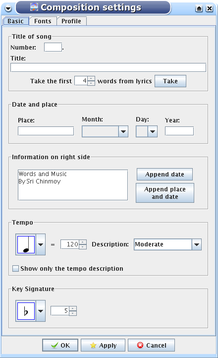
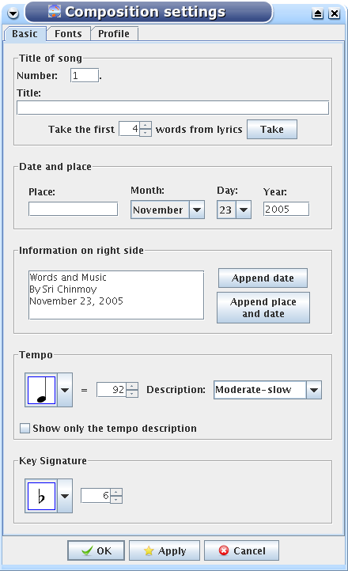

icon on the tool bar.
icon on the tool bar.
Let's start with an empty document. First we open the Composition Setting window to set up our song.
We can do this in the Composition | Composition settings menu, or simply clicking the
icon on the tool bar.

You can type the number of the song if applicable. The title of the song will be entered later, after we have recorded the lyrics. In the information text box we type the date of the song. Now we set up the tempo and the leading keys. From the tempo description drop down list you can select a preset description or you can type in anything you want.

And now we click on the OK button.